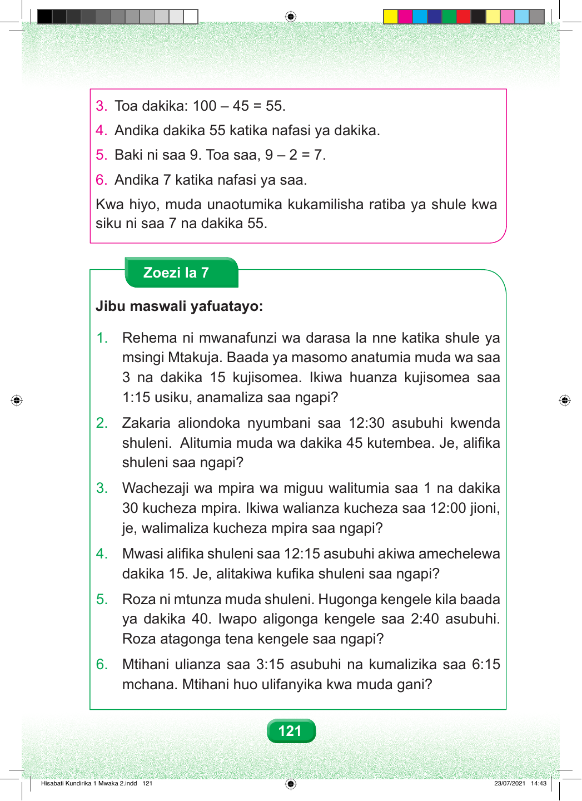

121 3. Toa dakika: 100 – 45 = 55. 4. Andika dakika 55 katika nafasi ya dakika. 5. Baki ni saa 9. Toa saa, 9 – 2 = 7. 6. Andika 7 katika nafasi ya saa. Kwa hiyo, muda unaotumika kukamilisha ratiba ya shule kwa siku ni saa 7 na dakika 55. Zoezi la 7 Jibu maswali yafuatayo: 1. Rehema ni mwanafunzi wa darasa la nne katika shule ya msingi Mtakuja. Baada ya masomo anatumia muda wa saa 3 na dakika 15 kujisomea. Ikiwa huanza kujisomea saa 1:15 usiku, anamaliza saa ngapi? 2. Zakaria aliondoka nyumbani saa 12:30 asubuhi kwenda shuleni. Alitumia muda wa dakika 45 kutembea. Je, alifika shuleni saa ngapi? 3. Wachezaji wa mpira wa miguu walitumia saa 1 na dakika 30 kucheza mpira. Ikiwa walianza kucheza saa 12:00 jioni, je, walimaliza kucheza mpira saa ngapi? 4. Mwasi alifika shuleni saa 12:15 asubuhi akiwa amechelewa dakika 15. Je, alitakiwa kufika shuleni saa ngapi? 5. Roza ni mtunza muda shuleni. Hugonga kengele kila baada ya dakika 40. Iwapo aligonga kengele saa 2:40 asubuhi. Roza atagonga tena kengele saa ngapi? 6. Mtihani ulianza saa 3:15 asubuhi na kumalizika saa 6:15 mchana. Mtihani huo ulifanyika kwa muda gani? Hisabati Kundirika 1 Mwaka 2.indd 121 23/07/2021 14:43